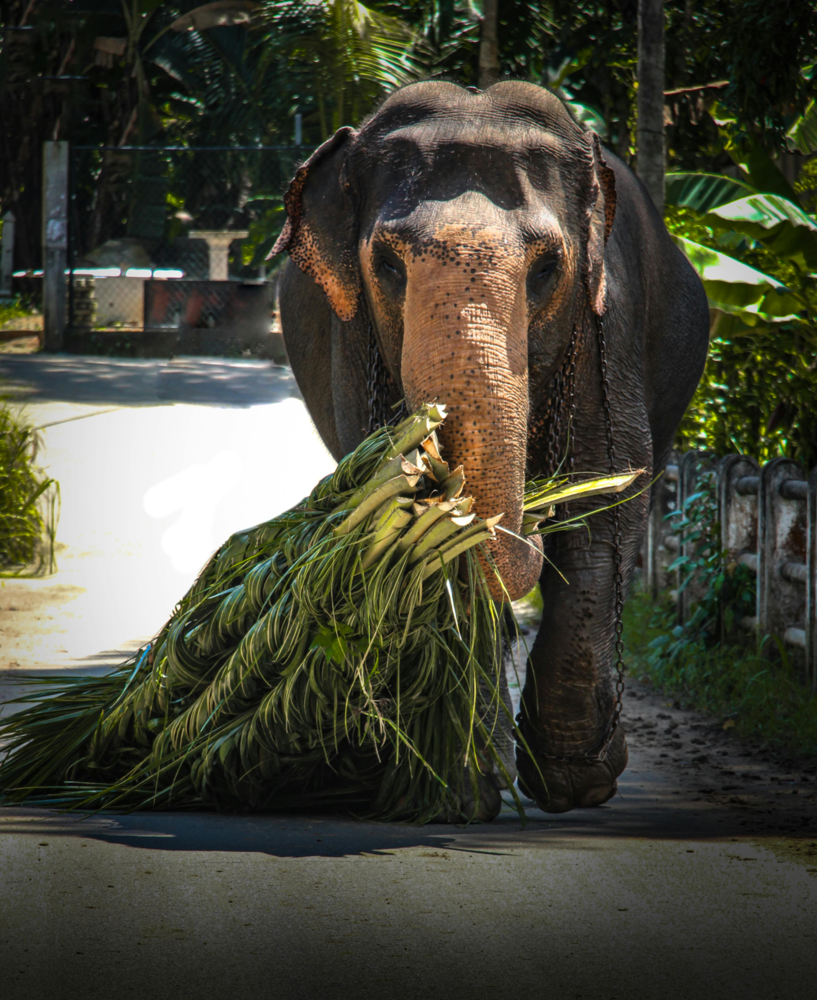
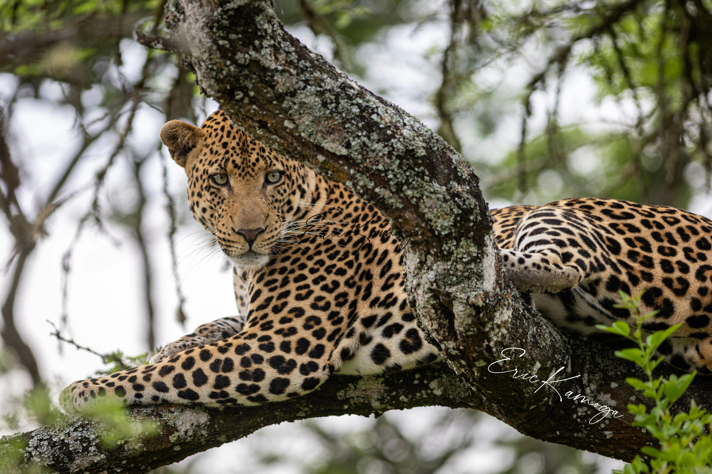
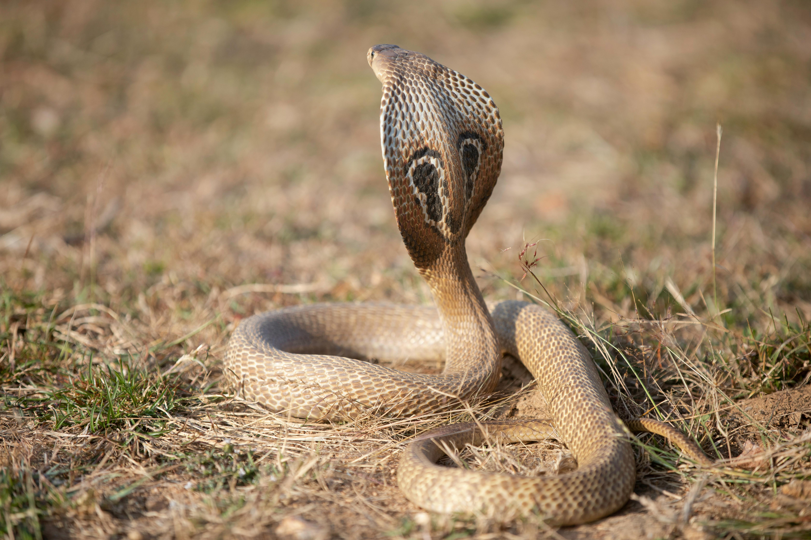
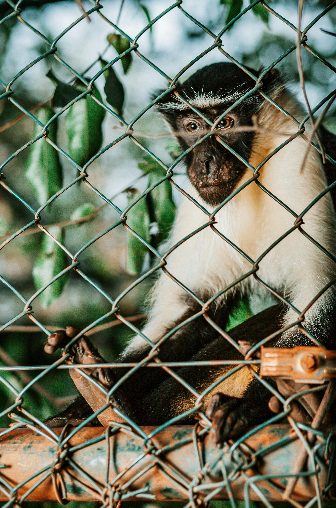
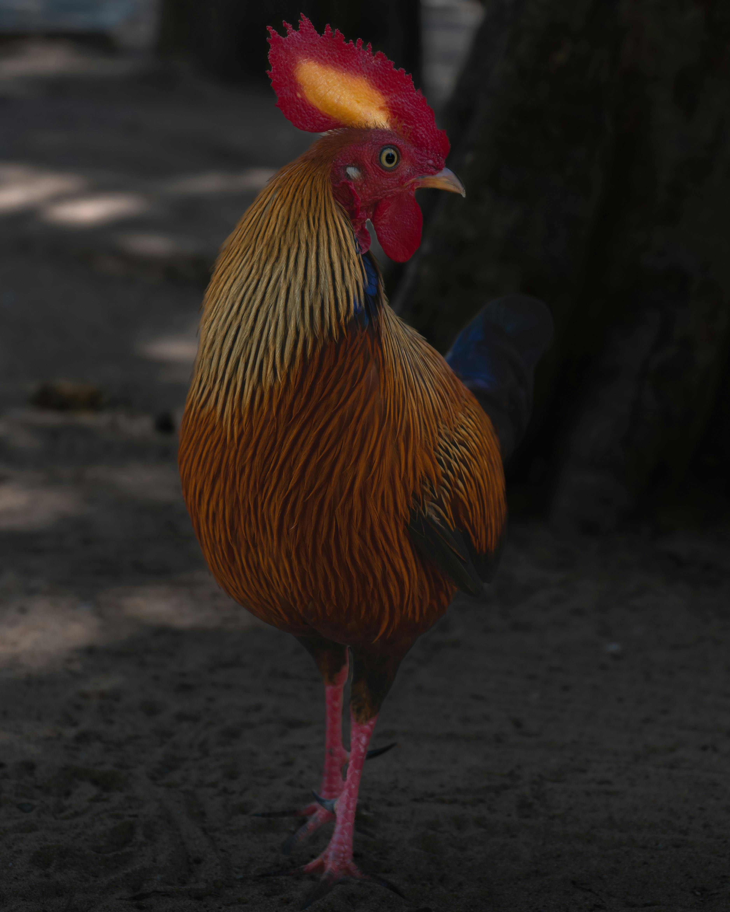

Srilankan Native Animals
-
Asian Elephant:
- Social Structure: Asian elephants are known for their complex social structures, living in matriarchal groups led by an experienced female.
- Conservation Challenges: Conservation efforts focus on mitigating human-elephant conflicts, protecting habitats, and preventing illegal poaching.
-
Sri Lankan Sloth Bear:
- Unique Behaviors: Sloth bears exhibit unique behaviors like climbing trees to feed on fruits and using their long, curved claws for digging.
- Conservation Status: Classified as Vulnerable, conservation initiatives target the preservation of their habitats and prevention of illegal trade.
-
Indian Pangolin:
- Reproductive Habits: Pangolins are solitary and have low reproductive rates, giving birth to one offspring at a time.
- Conservation Measures: Conservation efforts involve addressing the illegal trade of pangolins and protecting their habitats to ensure their survival.
-
Purple-faced Langur:
- Social Behavior: Purple-faced langurs live in social groups and exhibit a range of vocalizations for communication within the troop.
- Conservation Challenges: Habitat loss and fragmentation pose significant threats, emphasizing the need for protected areas.
-
Sri Lankan Leopard:
- Reproductive Cycle: Female leopards have a gestation period of about 90 to 105 days, and cubs stay with their mother until they are independent.
- Conservation Initiatives: Conservation projects focus on habitat protection, anti-poaching measures, and community education to reduce human-leopard conflicts.
-
Saltwater Crocodile:
- Ecological Role: Crocodiles play a vital role in maintaining the health of aquatic ecosystems by controlling prey populations.
- Conservation Awareness: Conservation efforts include raising awareness about the importance of these apex predators and implementing safety measures in human-populated areas.
-
Indian Star Tortoise:
- Reproduction: Female star tortoises lay clutches of eggs, and the species is known for its slow growth rate.
- Conservation Challenges: Protection involves addressing illegal trade and establishing safe habitats for their survival.
-
Ceylon Spitting Cobra:
- Venom Properties: The venom of the spitting cobra is potent, and spitting is a defensive behavior aimed at the eyes of potential threats.
- Conservation Role: Despite being venomous, these snakes contribute to ecosystem balance by controlling rodent populations.
-
Purple-faced Leaf Monkey:
- Arboreal Adaptations: These leaf monkeys are well-adapted to an arboreal lifestyle, using their strong tails for balance in trees.
- Conservation Education: Conservation efforts involve educating local communities about the importance of preserving their habitats.
-
Sri Lankan Junglefowl:
- Cultural Significance: The junglefowl is culturally significant and is considered the progenitor of the domestic chicken.
- Conservation Advocacy: Conservation initiatives promote the protection of their habitats and celebrate the cultural importance of this national bird.

Elephant

Sri Lankan Leopard

Sloth Bears

Ceylon Spitting Cobra

Purple-faced Leaf Monkey
